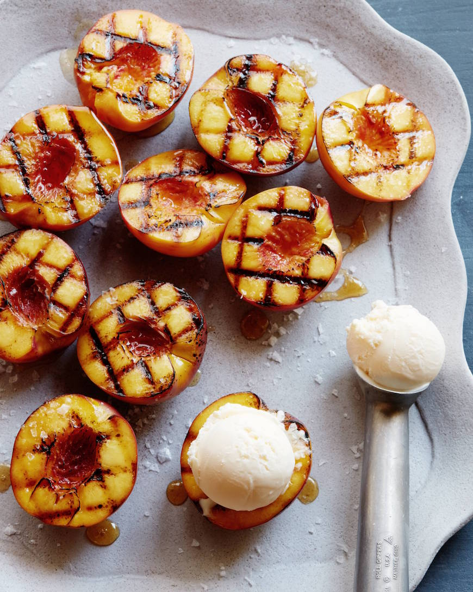

Grilled Peaches and Cream

Description
There's really nothing quite like Grilled Peaches topped with Vanilla Ice Cream!!! Its one of my all time favorite desserts. So let's go over how to easily grill peaches!
Ingredients & Substitutions:
- Peaches ripe
- Nectarines ripe
- Canola Oil
- Vanilla ice cream
- Honey
- Sea Salt
How to Make Grilled Peaches:
- Heat grill to medium high heat. Brush the peach and nectarines halves with a touch of oil and place on the grill for a few minutes.
- Then rotate 90 degrees to continue to cook for about 3-4 minutes total grill marks appear and the fruit starts to caramelize.
- Remove from the grill with a pair of tongs and serve with a scoop of ice cream in the center of the fruit. Drizzle with honey and a sprinkle of flaky sea salt.
How to Store Grilled Peaches:
While best when fresh and warm, you can store leftovers in the fridge for a day or two. Warm them up on the stove when it is time to eat.